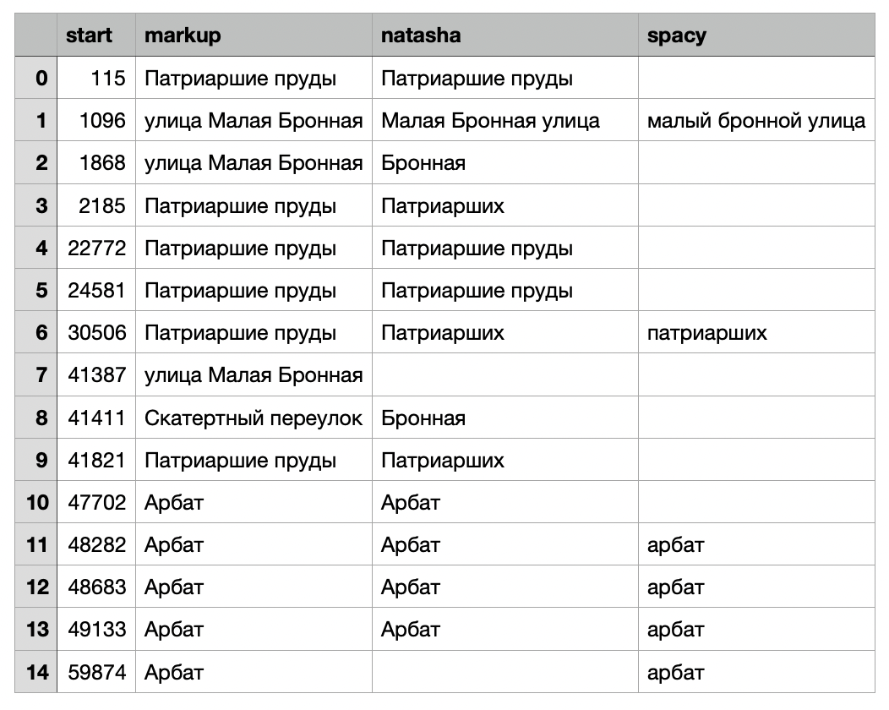

Подсчитана с помощью коэффициента Каппа Коэна. Соответствующий инструмент есть в библиотеке scikit-learn. После подсчетов был получен коэффициент равный 0,64. По существующим шкалам интерпретации результатов полученный нами уровень согласия работы моделей можно считать существенным.
Подсчитана на основе ручной разметки нескольких фрагментов литературных текстов.
По библиотеке Natasha получены следующие результаты (округлено до сотых):
precision = 0.22
recall = 0.57
По библиотеке Spacy:
precision = 0.19
recall = 0.50